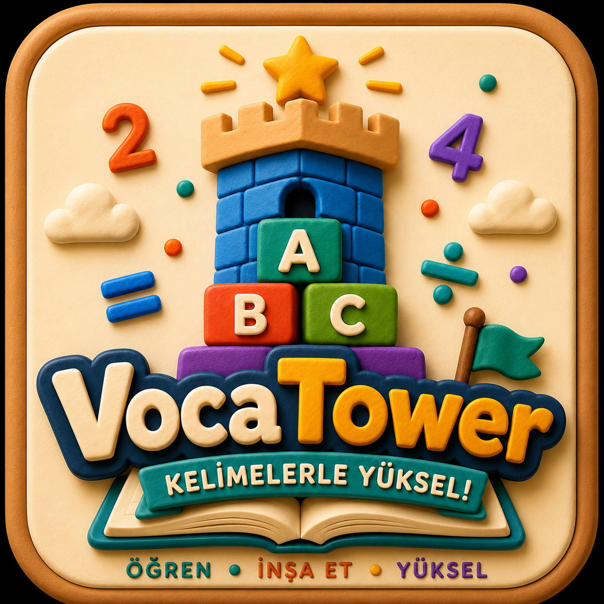
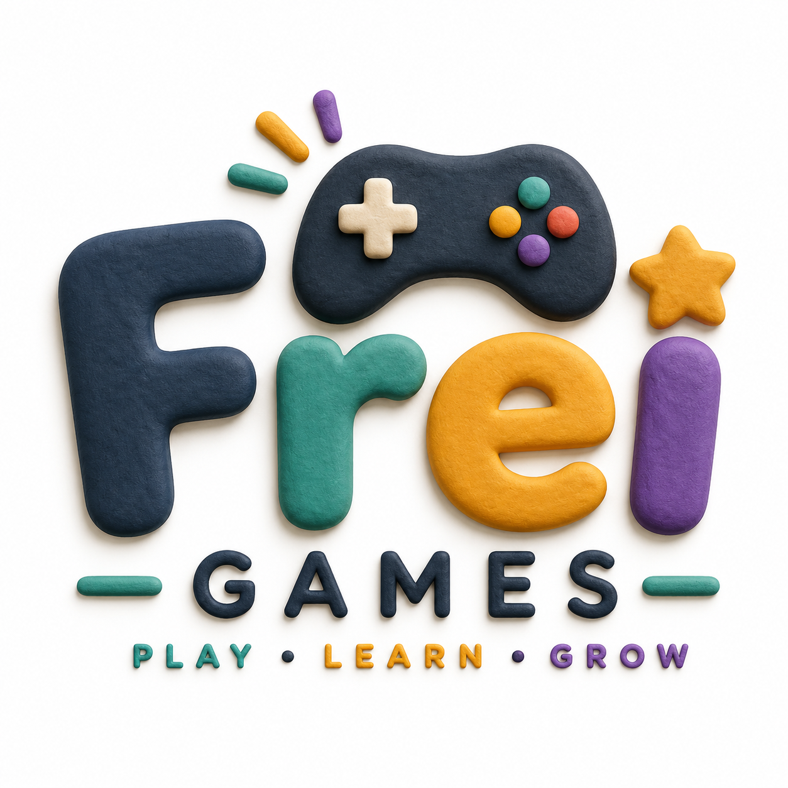

VocaTower
Son güncelleme: 2026
VocaTower, Frei Games tarafından geliştirilen bir çocuk kelime öğrenme oyunudur. Çocukların gizliliğini korumak bizim için önceliklidir. Bu sayfa, uygulamanın verilerinizle ilgili ne yapıp ne yapmadığını açıkça anlatır.
VocaTower'ı kullanmak için hesap oluşturmanıza, e-posta adresi vermenize ya da herhangi bir kayıt işlemi yapmanıza gerek yoktur. Oyuna başladığınızda sadece bir kullanıcı adı ve bir avatar seçersiniz — bu bilgiler cihazınızda kalır.
Uygulama; e-posta adresi, tam ad, doğum tarihi, konum, telefon numarası ya da başka herhangi bir kişisel/tanımlayıcı veri toplamaz. Oluşturduğunuz kullanıcı adı yalnızca cihazınızda saklanır ve hiçbir sunucuya gönderilmez.
XP, kule ilerlemesi, altın, rozetler ve istatistikleriniz tarayıcınızın localStorage özelliği kullanılarak yalnızca kendi cihazınızda saklanır. Bu veriler herhangi bir sunucuya gönderilmez, bizimle ya da üçüncü taraflarla paylaşılmaz. Tarayıcı verilerinizi temizlerseniz bu ilerleme silinir.
Uygulamanın bu sürümü herhangi bir reklam içermez.
Uygulamanın bu sürümü kullanıcı takibi yapan analitik ya da izleme araçları içermez.
VocaTower; üçüncü taraf girişi, harici sohbet, sosyal medya paylaşımı ya da kullanıcı tarafından oluşturulan içerik barındırmaz.
Gizlilikle ilgili sorularınız için bize ulaşabilirsiniz: support@vocatower.com